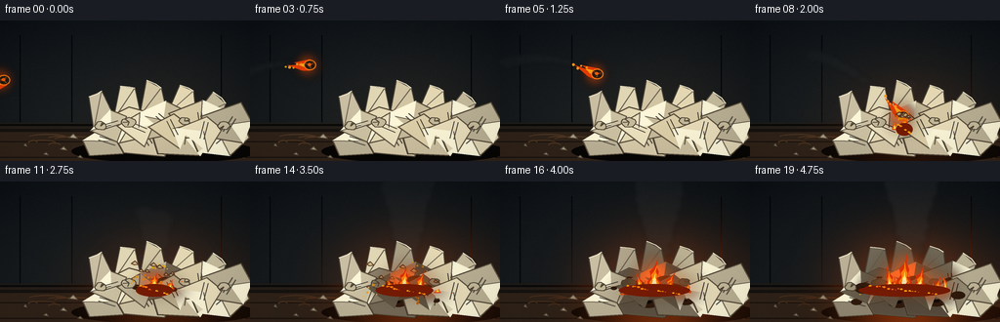
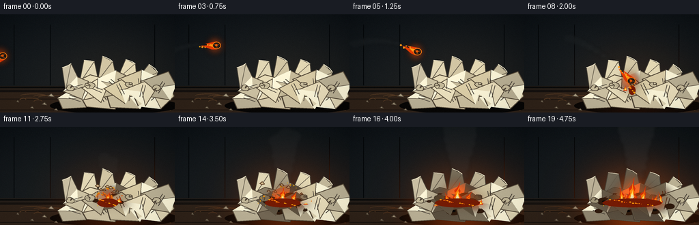
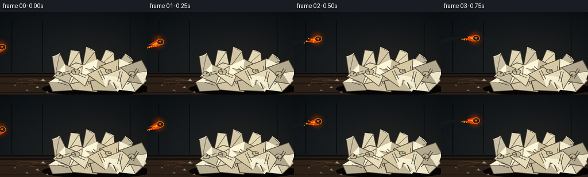

CODING AGENTS AS PIXEL WORLD MODELS
traex/GPT-5.6-Sol · phygen_141
点击播放 · 原生 RGB 像素
逐轮保存的候选
回放视频、检查图与代码变化。
每份候选均可单独播放。实际图片检查记录在下方工具轨迹中。
候选 01播放与检查图
点击播放 · 原生 RGB 像素

展开代码变化
--- 上一保存版本
+++ 本次保存版本
@@ -0,0 +1,347 @@
+from pathlib import Path
+import math
+import numpy as np
+from PIL import Image, ImageDraw, ImageFilter
+import artifact_io
+
+# Deterministic, fully procedural text-to-video rendering.
+W, H, N, FPS = 256, 144, 20, 4
+S = 4
+SW, SH = W*S, H*S
+ROOT = Path(__file__).resolve().parent
+
+
+def sc(v): return int(round(v*S))
+def pts(seq): return [(sc(x), sc(y)) for x, y in seq]
+def hash01(*vals):
+ n = 2166136261
+ for v in vals:
+ n = (n ^ int(v*1009 + 9176)) * 16777619 & 0xffffffff
+ return ((n >> 8) & 0xffffff) / float(0xffffff)
+
+def rgba_layer(): return Image.new('RGBA', (SW, SH), (0,0,0,0))
+def polygon(d, p, fill, outline=None, width=1):
+ d.polygon(pts(p), fill=fill)
+ if outline:
+ d.line(pts(p+[p[0]]), fill=outline, width=sc(width), joint='curve')
+def ellipse(d, box, fill, outline=None, width=1):
+ d.ellipse(tuple(sc(x) for x in box), fill=fill, outline=outline, width=sc(width))
+def line(d, p, fill, width=1): d.line(pts(p), fill=fill, width=sc(width), joint='curve')
+
+# Static cinematic background: dim room and a worn wooden table.
+rng = np.random.default_rng(141)
+yy, xx = np.mgrid[0:SH, 0:SW]
+# blue-gray wall gradient with vignette and fine photographic grain
+wall = np.zeros((SH, SW, 3), dtype=np.float32)
+wall[...,0] = 18 + 11*(yy/SH)
+wall[...,1] = 23 + 10*(yy/SH)
+wall[...,2] = 27 + 8*(yy/SH)
+# faint warm light around the future fire, maintaining detail in shadows
+warm = np.exp(-(((xx/S-168)/105)**2 + ((yy/S-96)/74)**2)*1.5)
+wall += warm[...,None]*np.array([10,5,0], np.float32)
+vign = np.clip(((xx-SW/2)/(SW*.71))**2 + ((yy-SH/2)/(SH*.82))**2, 0, 1)
+wall -= vign[...,None]*8
+wall += rng.normal(0, 1.35, wall.shape[:2])[...,None]
+wall = np.clip(wall, 0, 255).astype(np.uint8)
+base_bg = Image.fromarray(wall, 'RGB').convert('RGBA')
+
+# Geometry of many overlapping sheets. Polygon, face tone, and fold direction.
+sheets = [
+ ([(84,123),(113,105),(139,113),(126,137),(91,139)], (188,178,151), 0),
+ ([(114,115),(158,98),(182,113),(169,140),(126,136)], (216,203,171), 1),
+ ([(153,111),(199,94),(222,113),(205,139),(161,137)], (204,192,160), 2),
+ ([(190,108),(246,96),(256,120),(236,139),(202,135)], (226,215,181), 3),
+ ([(104,102),(132,88),(158,95),(153,119),(122,126)], (232,220,184), 4),
+ ([(139,96),(170,82),(194,94),(181,116),(151,122)], (200,188,155), 5),
+ ([(172,95),(207,81),(235,94),(224,117),(190,121)], (219,205,167), 6),
+ ([(205,98),(247,83),(258,103),(249,126),(219,121)], (188,178,150), 7),
+ ([(92,113),(113,91),(130,98),(120,125)], (205,194,163), 8),
+ ([(119,108),(143,94),(158,106),(148,130)], (237,226,191), 9),
+ ([(151,109),(178,95),(194,107),(184,132)], (222,208,169), 10),
+ ([(181,110),(212,98),(228,111),(213,135)], (235,223,188), 11),
+]
+# Loose upright/back scraps make the mass unmistakably a pile rather than a flat stack.
+back_scraps = [
+ ([(96,112),(91,78),(104,72),(119,103)], (203,192,164)),
+ ([(116,102),(123,67),(138,69),(145,102)], (226,215,181)),
+ ([(143,98),(150,61),(165,69),(172,100)], (211,198,164)),
+ ([(171,96),(184,66),(198,72),(201,101)], (231,219,182)),
+ ([(196,101),(218,73),(231,85),(224,108)], (200,189,158)),
+]
+
+# Fixed little paper crumbs on the table.
+crumbs = [(65,132,7,3,1),(75,120,9,4,-.5),(47,137,5,2,.4),(232,137,8,3,-.3),
+ (26,128,3,2,.2),(82,140,5,2,-.2)]
+
+def draw_environment(im):
+ d = ImageDraw.Draw(im, 'RGBA')
+ # shadowed wall seams and soft shelf shapes
+ d.rectangle((0, sc(105), SW, SH), fill=(38,31,25,255))
+ d.rectangle((0, sc(106), SW, sc(108)), fill=(10,10,10,130))
+ for x in (20,73,226):
+ d.rectangle((sc(x),sc(15),sc(x+1),sc(104)), fill=(5,8,10,55))
+ # table planks, grain and rim
+ d.rectangle((0,sc(111),SW,SH), fill=(48,35,25,255))
+ d.rectangle((0,sc(111),SW,sc(114)), fill=(22,18,15,255))
+ for y in (124,140):
+ d.line((0,sc(y),SW,sc(y)), fill=(22,17,13,130), width=sc(1))
+ for k in range(25):
+ y = 116 + hash01(k,3)*27
+ x = hash01(k,5)*230
+ ln = 9 + hash01(k,7)*38
+ d.arc((sc(x),sc(y),sc(min(256,x+ln)),sc(y+3+hash01(k,9)*3)),180,350,
+ fill=(83,57,35,50), width=sc(1))
+ # long pile contact shadow
+ d.ellipse((sc(73),sc(122),sc(263),sc(146)), fill=(7,6,5,180))
+ for x,y,w,h,a in crumbs:
+ polygon(d, [(x-w/2,y),(x,y-h),(x+w/2,y+1)], (170,158,132,255), (84,73,58,255), 1)
+
+
+def char_amount(cx, cy, f):
+ if f < 8: return 0.0
+ # ignition starts at (158,103), then advances through adjoining dry sheets.
+ age = f-8
+ reach = 9 + age*4.4
+ dist = math.hypot((cx-159)*0.92, (cy-105)*1.25)
+ return max(0.0, min(1.0, (reach-dist)/18.0))
+
+def draw_paper_pile(im, f):
+ d = ImageDraw.Draw(im, 'RGBA')
+ # back scraps with crease triangles
+ for i,(p,c) in enumerate(back_scraps):
+ cx=sum(x for x,y in p)/len(p); cy=sum(y for x,y in p)/len(p)
+ ch=char_amount(cx,cy,f)
+ col=tuple(int(c[j]*(1-.58*ch) + (32,24,19)[j]*(.58*ch)) for j in range(3))+(255,)
+ polygon(d,p,col,(73,66,55,255),1)
+ line(d,[p[0],p[2]],(108,99,82,130),1)
+ # torn top edge / fold
+ line(d,[p[1],((p[1][0]+p[2][0])/2+2,(p[1][1]+p[2][1])/2),p[2]],(247,237,207,95),1)
+ for i,(p,c,fold) in enumerate(sheets):
+ cx=sum(x for x,y in p)/len(p); cy=sum(y for x,y in p)/len(p)
+ ch=char_amount(cx,cy,f)
+ col=tuple(int(c[j]*(1-.68*ch) + (35,24,16)[j]*(.68*ch)) for j in range(3))+(255,)
+ # dark outline then paper face
+ polygon(d,p,(58,48,38,255),None)
+ inset=[((x-cx)*.96+cx,(y-cy)*.96+cy) for x,y in p]
+ polygon(d,inset,col,(100,88,68,220),1)
+ # fold triangle and several fibers / faint print marks
+ q0=p[fold%len(p)]; q1=p[(fold+1)%len(p)]; q2=(cx,cy)
+ polygon(d,[q0,q1,q2],(255,248,218,max(25,int(64*(1-ch)))),None)
+ line(d,[q0,q2],(99,88,72,105),1)
+ ang=(i*0.71+.3)
+ for j in range(2):
+ off=(j-0.5)*4
+ x1=cx-10*math.cos(ang)+off*math.sin(ang)
+ y1=cy-10*math.sin(ang)-off*math.cos(ang)
+ x2=cx+8*math.cos(ang)+off*math.sin(ang)
+ y2=cy+8*math.sin(ang)-off*math.cos(ang)
+ line(d,[(x1,y1),(x2,y2)],(76,69,59,int(48*(1-ch))),1)
+ # expanding scorched rings and irregular black holes near ignition
+ if ch>.10:
+ r=2+ch*9
+ ox=(hash01(i,12)-.5)*9; oy=(hash01(i,13)-.5)*7
+ ellipse(d,(cx+ox-r,cy+oy-r*.55,cx+ox+r,cy+oy+r*.55),(48,27,13,int(105+100*ch)))
+ if ch>.62:
+ rr=(ch-.55)*8
+ ellipse(d,(cx+ox-rr,cy+oy-rr*.45,cx+ox+rr,cy+oy+rr*.45),(8,7,6,230))
+ # top crumpled fragments
+ for i,(cx,cy,r) in enumerate([(103,108,7),(132,104,8),(229,108,7),(189,103,6)]):
+ ch=char_amount(cx,cy,f)
+ base=(198-int(115*ch),187-int(115*ch),155-int(105*ch),255)
+ pp=[]
+ for k in range(12):
+ a=math.tau*k/12; rr=r*(.7+.32*hash01(i,k,30))
+ pp.append((cx+math.cos(a)*rr,cy+math.sin(a)*rr*.72))
+ polygon(d,pp,base,(74,63,49,255),1)
+ for k in range(3):
+ a=hash01(i,k,44)*math.tau
+ line(d,[(cx,cy),(cx+math.cos(a)*r*.8,cy+math.sin(a)*r*.5)],(80,69,55,150),1)
+
+
+def trajectory(t):
+ # frames 0..8: a convincing rightward throw with gravity-dominated descent.
+ x = 4 + 19.1*t
+ y = 61 - 11.0*t + 1.95*t*t
+ return x,y
+
+def draw_smoke(im, f):
+ smoke=rgba_layer(); d=ImageDraw.Draw(smoke,'RGBA')
+ # smoke follows the airborne ball, with old puffs drifting upward and left.
+ if f <= 9:
+ for k in range(1,10):
+ past=f-k*.48
+ if past < -.6: continue
+ x,y=trajectory(max(0,past))
+ age=k*.48
+ x-=age*2.0; y-=age*2.7
+ r=2.2+age*1.15
+ alpha=max(0,int(72-age*8))
+ ellipse(d,(x-r*1.3,y-r,x+r*1.3,y+r),(43,47,48,alpha))
+ # progressively thick, turbulent smoke column after impact.
+ if f>=7:
+ age=f-7
+ count=8+age*3
+ for k in range(count):
+ born=k*.43
+ life=age-born*.17
+ if life<0: continue
+ rise=(k*3.2 + age*1.3)
+ x=159 + math.sin(k*1.67+f*.37)*(3+rise*.13) + max(0,age-5)*.9
+ y=99-rise
+ rx=4.2+rise*.10; ry=3.3+rise*.085
+ a=int(max(10, min(88, 42+age*3-rise*.35)))
+ tone=int(47+min(25,rise*.28))
+ ellipse(d,(x-rx,y-ry,x+rx,y+ry),(tone,tone+1,tone+1,a))
+ smoke=smoke.filter(ImageFilter.GaussianBlur(sc(2.2)))
+ im.alpha_composite(smoke)
+
+
+def flame_shape(cx, base, h, w, phase, lean=0):
+ # Irregular tapered silhouette with a fork on one side.
+ tipx=cx+lean+math.sin(phase)*w*.15
+ return [(cx-w*.55,base),(cx-w*.62,base-h*.18),
+ (cx-w*.29,base-h*.35),(cx-w*.40,base-h*.54),
+ (cx-w*.11+lean*.45,base-h*.70),(tipx,base-h),
+ (cx+w*.10+lean*.35,base-h*.68),(cx+w*.38,base-h*.52),
+ (cx+w*.24,base-h*.32),(cx+w*.59,base-h*.15),(cx+w*.47,base)]
+
+def one_flame(crisp, glow, cx, base, h, w, phase, lean=0):
+ gd=ImageDraw.Draw(glow,'RGBA'); cd=ImageDraw.Draw(crisp,'RGBA')
+ # broad light emission, then layered flame body.
+ ellipse(gd,(cx-w*1.7,base-h*1.1,cx+w*1.7,base+h*.28),(255,83,9,100))
+ polygon(cd,flame_shape(cx,base,h,w,phase,lean),(218,48,5,230))
+ inner=flame_shape(cx,base-1,h*.72,w*.68,phase+1.1,lean*.55)
+ polygon(cd,inner,(255,128,8,245))
+ core=flame_shape(cx,base-1,h*.43,w*.40,phase+2.0,lean*.25)
+ polygon(cd,core,(255,229,94,250))
+ if h>18:
+ ellipse(cd,(cx-w*.17,base-h*.25,cx+w*.17,base-1),(255,250,191,220))
+
+def draw_airborne_ball_and_fire(im, f):
+ if f>8: return
+ x,y=trajectory(f)
+ # motion streak / residual orange glow behind direction of travel
+ glow=rgba_layer(); gd=ImageDraw.Draw(glow,'RGBA')
+ ellipse(gd,(x-15,y-13,x+10,y+13),(255,77,5,105))
+ glow=glow.filter(ImageFilter.GaussianBlur(sc(5)))
+ im.alpha_composite(glow)
+ d=ImageDraw.Draw(im,'RGBA')
+ # trailing flame points back along velocity, visibly attached to burning ball
+ vx=19.1; vy=-11+3.9*f; speed=math.hypot(vx,vy); ux=-vx/speed; uy=-vy/speed
+ nx=-uy; ny=ux
+ L=18+3*math.sin(f*1.9); w=6
+ flame=[(x+nx*w,y+ny*w),(x+ux*L+nx*2,y+uy*L+ny*2),
+ (x+ux*(L*.62),y+uy*(L*.62)),(x+ux*(L+7)-nx*1,y+uy*(L+7)-ny*1),
+ (x+ux*(L*.45)-nx*w,y+uy*(L*.45)-ny*w),(x-nx*w,y-ny*w)]
+ polygon(d,flame,(230,60,4,235))
+ inner=[(x+nx*3,y+ny*3),(x+ux*(L*.76),y+uy*(L*.76)),
+ (x+ux*(L*.42)-nx*2,y+uy*(L*.42)-ny*2),(x-nx*3,y-ny*3)]
+ polygon(d,inner,(255,169,21,250))
+ # crumpled, burning paper sphere with lit rim and creases
+ ellipse(d,(x-6.2,y-5.3,x+6.2,y+5.3),(47,29,18,255),(255,125,16,255),1)
+ for k in range(6):
+ a=math.tau*k/6+f*.14
+ rr=4.6
+ line(d,[(x,y),(x+math.cos(a)*rr,y+math.sin(a)*rr*.75)],
+ (122 if k%2 else 20,67 if k%2 else 17,24 if k%2 else 13,230),1)
+ ellipse(d,(x-2.4,y-2,x+1.2,y+1.1),(242,92,8,230))
+ # tiny drifting embers from the moving ball
+ for k in range(5):
+ ex=x+ux*(9+k*4)+nx*(hash01(f,k)-.5)*8
+ ey=y+uy*(9+k*4)+ny*(hash01(f,k,2)-.5)*8
+ r=.7+hash01(k,f,7)*.7
+ ellipse(d,(ex-r,ey-r,ex+r,ey+r),(255,151,25,220))
+
+
+def draw_impact_debris(im, f):
+ if not (7<=f<=14): return
+ d=ImageDraw.Draw(im,'RGBA'); t=max(0,f-7)
+ # hot sparks fan upward and outward, then fade.
+ for k in range(22):
+ ang=-2.82 + k/21*2.48
+ speed=2.1+hash01(k,9)*5.6
+ ex=158+math.cos(ang)*speed*t
+ ey=103+math.sin(ang)*speed*t+0.58*t*t
+ if ey>141: continue
+ a=max(0,255-t*27-int(k%3)*15)
+ r=.45+hash01(k,4)
+ ellipse(d,(ex-r,ey-r,ex+r,ey+r),(255,125+int(90*hash01(k,8)),25,a))
+ if t<4:
+ line(d,[(ex,ey),(ex-math.cos(ang)*2.5,ey-math.sin(ang)*2.5)],(255,91,8,a),1)
+ # a few lightweight paper scraps tossed by impact.
+ for k in range(7):
+ vx=(-5.0+k*1.6); vy=-(4.4+hash01(k,5)*3.4)
+ px=158+vx*t; py=103+vy*t+.72*t*t
+ if py<145:
+ sz=2.1+hash01(k,3)*2
+ polygon(d,[(px-sz,py),(px,py-sz*.7),(px+sz,py+1),(px-.4,py+sz*.45)],
+ (211,188,143,max(0,230-t*20)),(89,56,31,max(0,220-t*20)),1)
+
+
+def draw_pile_fire(im,f):
+ if f<7: return
+ age=f-7
+ glow=rgba_layer(); crisp=rgba_layer()
+ # short flash at contact, then multiple loci spreading across dry sheets.
+ configs=[]
+ configs.append((158,108, min(43,7+age*3.15), 8+age*.42, .25))
+ if f>=9: configs.append((174,111,min(36,5+(f-9)*3.0),7+(f-9)*.42,.48))
+ if f>=11: configs.append((143,111,min(31,4+(f-11)*2.7),6+(f-11)*.35,-.35))
+ if f>=13: configs.append((192,114,min(28,3+(f-13)*2.6),6+(f-13)*.30,.35))
+ if f>=15: configs.append((127,116,min(22,3+(f-15)*2.8),5.5,-.5))
+ # small tongues between principal flames add an organically continuous fire line.
+ for j in range(max(1,age//2)):
+ cx=148+(j*13)%55
+ h=min(18,4+age*1.1+4*math.sin(j*2.3+f))
+ configs.append((cx,112+(j%2)*3,h,4.5,math.sin(j)))
+ for j,(cx,base,h,w,lean) in enumerate(configs):
+ flick=.87+.16*math.sin(f*2.17+j*1.81)
+ one_flame(crisp,glow,cx,base,h*flick,w, f*.83+j*1.4,lean*w)
+ glow=glow.filter(ImageFilter.GaussianBlur(sc(8)))
+ im.alpha_composite(glow)
+ im.alpha_composite(crisp)
+ # glowing fire bed and crawling edge along paper fibers
+ d=ImageDraw.Draw(im,'RGBA')
+ spread=min(47,5+age*3.5)
+ ellipse(d,(158-spread,105,158+spread,118),(118,27,4,100))
+ for k in range(10+age):
+ ex=158+(hash01(k,51)-.5)*spread*2
+ ey=106+hash01(k,52)*10
+ rr=.4+hash01(k,53)*1.2
+ ellipse(d,(ex-rr,ey-rr*.55,ex+rr,ey+rr*.55),(255,92+int(hash01(k)*90),9,200))
+
+
+def render_frame(f):
+ im=base_bg.copy()
+ draw_environment(im)
+ # firelight cast onto the table and paper pile, growing after impact.
+ if f>=7:
+ light=rgba_layer(); ld=ImageDraw.Draw(light,'RGBA')
+ strength=min(115,18+(f-7)*9)
+ ellipse(ld,(70,50,256,151),(255,91,16,strength))
+ light=light.filter(ImageFilter.GaussianBlur(sc(34)))
+ im.alpha_composite(light)
+ # Smoke lies behind the pile and bright flames.
+ draw_smoke(im,f)
+ draw_paper_pile(im,f)
+ draw_airborne_ball_and_fire(im,f)
+ draw_impact_debris(im,f)
+ draw_pile_fire(im,f)
+ # warm localized grade and subtle black letterbox-like edge vignette
+ rgb=np.asarray(im.convert('RGB').resize((W,H),Image.Resampling.LANCZOS),dtype=np.float32)
+ y,x=np.mgrid[0:H,0:W]
+ edge=np.clip(((x-W/2)/(W*.70))**2+((y-H/2)/(H*.86))**2,0,1)
+ rgb*= (1-edge[...,None]*.13)
+ # a restrained static grain prevents large flat synthetic regions
+ grain=np.random.default_rng(9000+f).normal(0,.52,(H,W,1))
+ rgb=np.clip(rgb+grain,0,255).astype(np.uint8)
+ return rgb
+
+
+def main():
+ frames=np.stack([render_frame(f) for f in range(N)],axis=0)
+ artifact_io.save(frames,ROOT)
+ print('saved',frames.shape,frames.dtype,'to',ROOT)
+
+if __name__=='__main__':
+ main()
候选 02播放与检查图
点击播放 · 原生 RGB 像素


展开代码变化
--- 上一保存版本
+++ 本次保存版本
@@ -178,8 +178,8 @@
alpha=max(0,int(72-age*8))
ellipse(d,(x-r*1.3,y-r,x+r*1.3,y+r),(43,47,48,alpha))
# progressively thick, turbulent smoke column after impact.
- if f>=7:
- age=f-7
+ if f>=8:
+ age=f-8
count=8+age*3
for k in range(count):
born=k*.43
@@ -254,8 +254,8 @@
def draw_impact_debris(im, f):
- if not (7<=f<=14): return
- d=ImageDraw.Draw(im,'RGBA'); t=max(0,f-7)
+ if not (8<=f<=15): return
+ d=ImageDraw.Draw(im,'RGBA'); t=max(0,f-8)
# hot sparks fan upward and outward, then fade.
for k in range(22):
ang=-2.82 + k/21*2.48
@@ -279,16 +279,16 @@
def draw_pile_fire(im,f):
- if f<7: return
- age=f-7
+ if f<8: return
+ age=f-8
glow=rgba_layer(); crisp=rgba_layer()
# short flash at contact, then multiple loci spreading across dry sheets.
configs=[]
configs.append((158,108, min(43,7+age*3.15), 8+age*.42, .25))
- if f>=9: configs.append((174,111,min(36,5+(f-9)*3.0),7+(f-9)*.42,.48))
- if f>=11: configs.append((143,111,min(31,4+(f-11)*2.7),6+(f-11)*.35,-.35))
- if f>=13: configs.append((192,114,min(28,3+(f-13)*2.6),6+(f-13)*.30,.35))
- if f>=15: configs.append((127,116,min(22,3+(f-15)*2.8),5.5,-.5))
+ if f>=10: configs.append((174,111,min(36,5+(f-10)*3.0),7+(f-10)*.42,.48))
+ if f>=12: configs.append((143,111,min(31,4+(f-12)*2.7),6+(f-12)*.35,-.35))
+ if f>=14: configs.append((192,114,min(28,3+(f-14)*2.6),6+(f-14)*.30,.35))
+ if f>=16: configs.append((127,116,min(22,3+(f-16)*2.8),5.5,-.5))
# small tongues between principal flames add an organically continuous fire line.
for j in range(max(1,age//2)):
cx=148+(j*13)%55
@@ -315,9 +315,9 @@
im=base_bg.copy()
draw_environment(im)
# firelight cast onto the table and paper pile, growing after impact.
- if f>=7:
+ if f>=8:
light=rgba_layer(); ld=ImageDraw.Draw(light,'RGBA')
- strength=min(115,18+(f-7)*9)
+ strength=min(115,18+(f-8)*9)
ellipse(ld,(70,50,256,151),(255,91,16,strength))
light=light.filter(ImageFilter.GaussianBlur(sc(34)))
im.alpha_composite(light)
可观测工具轨迹
实际执行的命令与返回图片。
命令 1exit 0
/bin/bash -lc "cat prompt.txt && printf '\\n--- GENERATION_RULES.md ---\\n' && cat GENERATION_RULES.md"
命令 2exit 0
/bin/bash -lc "cat task_spec.json && printf '\\n--- FILES ---\\n' && find . -maxdepth 2 -type f -printf '%p\\n' | sort"
命令 3exit 0
/bin/bash -lc "command -v ffmpeg; command -v python3; python3 - <<'PY' mods=['PIL','numpy','cv2','imageio','scipy'] for m in mods: try: x=__import__(m); print(m, getattr(x,'__version__','ok')) except Exception as e: print(m,'MISSING',e) PY"
命令 4exit 0
/bin/bash -lc "sed -n '1,260p' artifact_io.py"
命令 5exit 0
/bin/bash -lc "cat > generate.py <<'PY'
from pathlib import Path
import math
import numpy as np
from PIL import Image, ImageDraw, ImageFilter
import artifact_io
# Deterministic, fully procedural text-to-video rendering.
W, H, N, FPS = 256, 144, 20, 4
S = 4
SW, SH = W*S, H*S
ROOT = Path(__file__).resolve().parent
def sc(v): return int(round(v*S))
def pts(seq): return [(sc(x), sc(y)) for x, y in seq]
def hash01(*vals):
n = 2166136261
for v in vals:
n = (n "'^ int(v*1009 + 9176)) * 16777619 & 0xffffffff
return ((n >> 8) & 0xffffff) / float(0xffffff)
def rgba_layer(): return Image.new('"'RGBA', (SW, SH), (0,0,0,0))
def polygon(d, p, fill, outline=None, width=1):
d.polygon(pts(p), fill=fill)
if outline:
d.line(pts(p+[p[0]]), fill=outline, width=sc(width), joint='curve')
def ellipse(d, box, fill, outline=None, width=1):
d.ellipse(tuple(sc(x) for x in box), fill=fill, outline=outline, width=sc(width))
def line(d, p, fill, width=1): d.line(pts(p), fill=fill, width=sc(width), joint='curve')
# Static cinematic background: dim room and a worn wooden table.
rng = np.random.default_rng(141)
yy, xx = np.mgrid[0:SH, 0:SW]
# blue-gray wall gradient with vignette and fine photographic grain
wall = np.zeros((SH, SW, 3), dtype=np.float32)
wall[...,0] = 18 + 11*(yy/SH)
wall[...,1] = 23 + 10*(yy/SH)
wall[...,2] = 27 + 8*(yy/SH)
# faint warm light around the future fire, maintaining detail in shadows
warm = np.exp(-(((xx/S-168)/105)**2 + ((yy/S-96)/74)**2)*1.5)
wall += warm[...,None]*np.array([10,5,0], np.float32)
vign = np.clip(((xx-SW/2)/(SW*.71))**2 + ((yy-SH/2)/(SH*.82))**2, 0, 1)
wall -= vign[...,None]*8
wall += rng.normal(0, 1.35, wall.shape[:2])[...,None]
wall = np.clip(wall, 0, 255).astype(np.uint8)
base_bg = Image.fromarray(wall, 'RGB').convert('RGBA')
# Geometry of many overlapping sheets. Polygon, face tone, and fold direction.
sheets = [
([(84,123),(113,105),(139,113),(126,137),(91,139)], (188,178,151), 0),
([(114,115),(158,98),(182,113),(169,140),(126,136)], (216,203,171), 1),
([(153,111),(199,94),(222,113),(205,139),(161,137)], (204,192,160), 2),
([(190,108),(246,96),(256,120),(236,139),(202,135)], (226,215,181), 3),
([(104,102),(132,88),(158,95),(153,119),(122,126)], (232,220,184), 4),
([(139,96),(170,82),(194,94),(181,116),(151,122)], (200,188,155), 5),
([(172,95),(207,81),(235,94),(224,117),(190,121)], (219,205,167), 6),
([(205,98),(247,83),(258,103),(249,126),(219,121)], (188,178,150), 7),
([(92,113),(113,91),(130,98),(120,125)], (205,194,163), 8),
([(119,108),(143,94),(158,106),(148,130)], (237,226,191), 9),
([(151,109),(178,95),(194,107),(184,132)], (222,208,169), 10),
([(181,110),(212,98),(228,111),(213,135)], (235,223,188), 11),
]
# Loose upright/back scraps make the mass unmistakably a pile rather than a flat stack.
back_scraps = [
([(96,112),(91,78),(104,72),(119,103)], (203,192,164)),
([(116,102),(123,67),(138,69),(145,102)], (226,215,181)),
([(143,98),(150,61),(165,69),(172,100)], (211,198,164)),
([(171,96),(184,66),(198,72),(201,101)], (231,219,182)),
([(196,101),(218,73),(231,85),(224,108)], (200,189,158)),
]
# Fixed little paper crumbs on the table.
crumbs = [(65,132,7,3,1),(75,120,9,4,-.5),(47,137,5,2,.4),(232,137,8,3,-.3),
(26,128,3,2,.2),(82,140,5,2,-.2)]
def draw_environment(im):
d = ImageDraw.Draw(im, 'RGBA')
# shadowed wall seams and soft shelf shapes
d.rectangle((0, sc(105), SW, SH), fill=(38,31,25,255))
d.rectangle((0, sc(106), SW, sc(108)), fill=(10,10,10,130))
for x in (20,73,226):
d.rectangle((sc(x),sc(15),sc(x+1),sc(104)), fill=(5,8,10,55))
# table planks, grain and rim
d.rectangle((0,sc(111),SW,SH), fill=(48,35,25,255))
d.rectangle((0,sc(111),SW,sc(114)), fill=(22,18,15,255))
for y in (124,140):
d.line((0,sc(y),SW,sc(y)), fill=(22,17,13,130), width=sc(1))
for k in range(25):
y = 116 + hash01(k,3)*27
x = hash01(k,5)*230
ln = 9 + hash01(k,7)*38
d.arc((sc(x),sc(y),sc(min(256,x+ln)),sc(y+3+hash01(k,9)*3)),180,350,
fill=(83,57,35,50), width=sc(1))
# long pile contact shadow
d.ellipse((sc(73),sc(122),sc(263),sc(146)), fill=(7,6,5,180))
for x,y,w,h,a in crumbs:
polygon(d, [(x-w/2,y),(x,y-h),(x+w/2,y+1)], (170,158,132,255), (84,73,58,255), 1)
def char_amount(cx, cy, f):
if f < 8: return 0.0
# ignition starts at (158,103), then advances through adjoining dry sheets.
age = f-8
reach = 9 + age*4.4
dist = math.hypot((cx-159)*0.92, (cy-105)*1.25)
return max(0.0, min(1.0, (reach-dist)/18.0))
def draw_paper_pile(im, f):
d = ImageDraw.Draw(im, 'RGBA')
# back scraps with crease triangles
for i,(p,c) in enumerate(back_scraps):
cx=sum(x for x,y in p)/len(p); cy=sum(y for x,y in p)/len(p)
ch=char_amount(cx,cy,f)
col=tuple(int(c[j]*(1-.58*ch) + (32,24,19)[j]*(.58*ch)) for j in range(3))+(255,)
polygon(d,p,col,(73,66,55,255),1)
line(d,[p[0],p[2]],(108,99,82,130),1)
# torn top edge / fold
line(d,[p[1],((p[1][0]+p[2][0])/2+2,(p[1][1]+p[2][1])/2),p[2]],(247,237,207,95),1)
for i,(p,c,fold) in enumerate(sheets):
cx=sum(x for x,y in p)/len(p); cy=sum(y for x,y in p)/len(p)
ch=char_amount(cx,cy,f)
col=tuple(int(c[j]*(1-.68*ch) + (35,24,16)[j]*(.68*ch)) for j in range(3))+(255,)
# dark outline then paper face
polygon(d,p,(58,48,38,255),None)
inset=[((x-cx)*.96+cx,(y-cy)*.96+cy) for x,y in p]
polygon(d,inset,col,(100,88,68,220),1)
# fold triangle and several fibers / faint print marks
q0=p[fold%len(p)]; q1=p[(fold+1)%len(p)]; q2=(cx,cy)
polygon(d,[q0,q1,q2],(255,248,218,max(25,int(64*(1-ch)))),None)
line(d,[q0,q2],(99,88,72,105),1)
ang=(i*0.71+.3)
for j in range(2):
off=(j-0.5)*4
x1=cx-10*math.cos(ang)+off*math.sin(ang)
y1=cy-10*math.sin(ang)-off*math.cos(ang)
x2=cx+8*math.cos(ang)+off*math.sin(ang)
y2=cy+8*math.sin(ang)-off*math.cos(ang)
line(d,[(x1,y1),(x2,y2)],(76,69,59,int(48*(1-ch))),1)
# expanding scorched rings and irregular black holes near ignition
if ch>.10:
r=2+ch*9
ox=(hash01(i,12)-.5)*9; oy=(hash01(i,13)-.5)*7
ellipse(d,(cx+ox-r,cy+oy-r*.55,cx+ox+r,cy+oy+r*.55),(48,27,13,int(105+100*ch)))
if ch>.62:
rr=(ch-.55)*8
ellipse(d,(cx+ox-rr,cy+oy-rr*.45,cx+ox+rr,cy+oy+rr*.45),(8,7,6,230))
# top crumpled fragments
for i,(cx,cy,r) in enumerate([(103,108,7),(132,104,8),(229,108,7),(189,103,6)]):
ch=char_amount(cx,cy,f)
base=(198-int(115*ch),187-int(115*ch),155-int(105*ch),255)
pp=[]
for k in range(12):
a=math.tau*k/12; rr=r*(.7+.32*hash01(i,k,30))
pp.append((cx+math.cos(a)*rr,cy+math.sin(a)*rr*.72))
polygon(d,pp,base,(74,63,49,255),1)
for k in range(3):
a=hash01(i,k,44)*math.tau
line(d,[(cx,cy),(cx+math.cos(a)*r*.8,cy+math.sin(a)*r*.5)],(80,69,55,150),1)
def trajectory(t):
# frames 0..8: a convincing rightward throw with gravity-dominated descent.
x = 4 + 19.1*t
y = 61 - 11.0*t + 1.95*t*t
return x,y
def draw_smoke(im, f):
smoke=rgba_layer(); d=ImageDraw.Draw(smoke,'RGBA')
# smoke follows the airborne ball, with old puffs drifting upward and left.
if f <= 9:
for k in range(1,10):
past=f-k*.48
if past < -.6: continue
x,y=trajectory(max(0,past))
age=k*.48
x-=age*2.0; y-=age*2.7
r=2.2+age*1.15
alpha=max(0,int(72-age*8))
ellipse(d,(x-r*1.3,y-r,x+r*1.3,y+r),(43,47,48,alpha))
# progressively thick, turbulent smoke column after impact.
if f>=7:
age=f-7
count=8+age*3
for k in range(count):
born=k*.43
life=age-born*.17
if life<0: continue
rise=(k*3.2 + age*1.3)
x=159 + math.sin(k*1.67+f*.37)*(3+rise*.13) + max(0,age-5)*.9
y=99-rise
rx=4.2+rise*.10; ry=3.3+rise*.085
a=int(max(10, min(88, 42+age*3-rise*.35)))
tone=int(47+min(25,rise*.28))
ellipse(d,(x-rx,y-ry,x+rx,y+ry),(tone,tone+1,tone+1,a))
smoke=smoke.filter(ImageFilter.GaussianBlur(sc(2.2)))
im.alpha_composite(smoke)
def flame_shape(cx, base, h, w, phase, lean=0):
# Irregular tapered silhouette with a fork on one side.
tipx=cx+lean+math.sin(phase)*w*.15
return [(cx-w*.55,base),(cx-w*.62,base-h*.18),
(cx-w*.29,base-h*.35),(cx-w*.40,base-h*.54),
(cx-w*.11+lean*.45,base-h*.70),(tipx,base-h),
(cx+w*.10+lean*.35,base-h*.68),(cx+w*.38,base-h*.52),
(cx+w*.24,base-h*.32),(cx+w*.59,base-h*.15),(cx+w*.47,base)]
def one_flame(crisp, glow, cx, base, h, w, phase, lean=0):
gd=ImageDraw.Draw(glow,'RGBA'); cd=ImageDraw.Draw(crisp,'RGBA')
# broad light emission, then layered flame body.
ellipse(gd,(cx-w*1.7,base-h*1.1,cx+w*1.7,base+h*.28),(255,83,9,100))
polygon(cd,flame_shape(cx,base,h,w,phase,lean),(218,48,5,230))
inner=flame_shape(cx,base-1,h*.72,w*.68,phase+1.1,lean*.55)
polygon(cd,inner,(255,128,8,245))
core=flame_shape(cx,base-1,h*.43,w*.40,phase+2.0,lean*.25)
polygon(cd,core,(255,229,94,250))
if h>18:
ellipse(cd,(cx-w*.17,base-h*.25,cx+w*.17,base-1),(255,250,191,220))
def draw_airborne_ball_and_fire(im, f):
if f>8: return
x,y=trajectory(f)
# motion streak / residual orange glow behind direction of travel
glow=rgba_layer(); gd=ImageDraw.Draw(glow,'RGBA')
ellipse(gd,(x-15,y-13,x+10,y+13),(255,77,5,105))
glow=glow.filter(ImageFilter.GaussianBlur(sc(5)))
im.alpha_composite(glow)
d=ImageDraw.Draw(im,'RGBA')
# trailing flame points back along velocity, visibly attached to burning ball
vx=19.1; vy=-11+3.9*f; speed=math.hypot(vx,vy); ux=-vx/speed; uy=-vy/speed
nx=-uy; ny=ux
L=18+3*math.sin(f*1.9); w=6
flame=[(x+nx*w,y+ny*w),(x+ux*L+nx*2,y+uy*L+ny*2),
(x+ux*(L*.62),y+uy*(L*.62)),(x+ux*(L+7)-nx*1,y+uy*(L+7)-ny*1),
(x+ux*(L*.45)-nx*w,y+uy*(L*.45)-ny*w),(x-nx*w,y-ny*w)]
polygon(d,flame,(230,60,4,235))
inner=[(x+nx*3,y+ny*3),(x+ux*(L*.76),y+uy*(L*.76)),
(x+ux*(L*.42)-nx*2,y+uy*(L*.42)-ny*2),(x-nx*3,y-ny*3)]
polygon(d,inner,(255,169,21,250))
# crumpled, burning paper sphere with lit rim and creases
ellipse(d,(x-6.2,y-5.3,x+6.2,y+5.3),(47,29,18,255),(255,125,16,255),1)
for k in range(6):
a=math.tau*k/6+f*.14
rr=4.6
line(d,[(x,y),(x+math.cos(a)*rr,y+math.sin(a)*rr*.75)],
(122 if k%2 else 20,67 if k%2 else 17,24 if k%2 else 13,230),1)
ellipse(d,(x-2.4,y-2,x+1.2,y+1.1),(242,92,8,230))
# tiny drifting embers from the moving ball
for k in range(5):
ex=x+ux*(9+k*4)+nx*(hash01(f,k)-.5)*8
ey=y+uy*(9+k*4)+ny*(hash01(f,k,2)-.5)*8
r=.7+hash01(k,f,7)*.7
ellipse(d,(ex-r,ey-r,ex+r,ey+r),(255,151,25,220))
def draw_impact_debris(im, f):
if not (7<=f<=14): return
d=ImageDraw.Draw(im,'RGBA'); t=max(0,f-7)
# hot sparks fan upward and outward, then fade.
for k in range(22):
ang=-2.82 + k/21*2.48
speed=2.1+hash01(k,9)*5.6
ex=158+math.cos(ang)*speed*t
ey=103+math.sin(ang)*speed*t+0.58*t*t
if ey>141: continue
a=max(0,255-t*27-int(k%3)*15)
r=.45+hash01(k,4)
ellipse(d,(ex-r,ey-r,ex+r,ey+r),(255,125+int(90*hash01(k,8)),25,a))
if t<4:
line(d,[(ex,ey),(ex-math.cos(ang)*2.5,ey-math.sin(ang)*2.5)],(255,91,8,a),1)
# a few lightweight paper scraps tossed by impact.
for k in range(7):
vx=(-5.0+k*1.6); vy=-(4.4+hash01(k,5)*3.4)
px=158+vx*t; py=103+vy*t+.72*t*t
if py<145:
sz=2.1+hash01(k,3)*2
polygon(d,[(px-sz,py),(px,py-sz*.7),(px+sz,py+1),(px-.4,py+sz*.45)],
(211,188,143,max(0,230-t*20)),(89,56,31,max(0,220-t*20)),1)
def draw_pile_fire(im,f):
if f<7: return
age=f-7
glow=rgba_layer(); crisp=rgba_layer()
# short flash at contact, then multiple loci spreading across dry sheets.
configs=[]
configs.append((158,108, min(43,7+age*3.15), 8+age*.42, .25))
if f>=9: configs.append((174,111,min(36,5+(f-9)*3.0),7+(f-9)*.42,.48))
if f>=11: configs.append((143,111,min(31,4+(f-11)*2.7),6+(f-11)*.35,-.35))
if f>=13: configs.append((192,114,min(28,3+(f-13)*2.6),6+(f-13)*.30,.35))
if f>=15: configs.append((127,116,min(22,3+(f-15)*2.8),5.5,-.5))
# small tongues between principal flames add an organically continuous fire line.
for j in range(max(1,age//2)):
cx=148+(j*13)%55
h=min(18,4+age*1.1+4*math.sin(j*2.3+f))
configs.append((cx,112+(j%2)*3,h,4.5,math.sin(j)))
for j,(cx,base,h,w,lean) in enumerate(configs):
flick=.87+.16*math.sin(f*2.17+j*1.81)
one_flame(crisp,glow,cx,base,h*flick,w, f*.83+j*1.4,lean*w)
glow=glow.filter(ImageFilter.GaussianBlur(sc(8)))
im.alpha_composite(glow)
im.alpha_composite(crisp)
# glowing fire bed and crawling edge along paper fibers
d=ImageDraw.Draw(im,'RGBA')
spread=min(47,5+age*3.5)
ellipse(d,(158-spread,105,158+spread,118),(118,27,4,100))
for k in range(10+age):
ex=158+(hash01(k,51)-.5)*spread*2
ey=106+hash01(k,52)*10
rr=.4+hash01(k,53)*1.2
ellipse(d,(ex-rr,ey-rr*.55,ex+rr,ey+rr*.55),(255,92+int(hash01(k)*90),9,200))
def render_frame(f):
im=base_bg.copy()
draw_environment(im)
# firelight cast onto the table and paper pile, growing after impact.
if f>=7:
light=rgba_layer(); ld=ImageDraw.Draw(light,'RGBA')
strength=min(115,18+(f-7)*9)
ellipse(ld,(70,50,256,151),(255,91,16,strength))
light=light.filter(ImageFilter.GaussianBlur(sc(34)))
im.alpha_composite(light)
# Smoke lies behind the pile and bright flames.
draw_smoke(im,f)
draw_paper_pile(im,f)
draw_airborne_ball_and_fire(im,f)
draw_impact_debris(im,f)
draw_pile_fire(im,f)
# warm localized grade and subtle black letterbox-like edge vignette
rgb=np.asarray(im.convert('RGB').resize((W,H),Image.Resampling.LANCZOS),dtype=np.float32)
y,x=np.mgrid[0:H,0:W]
edge=np.clip(((x-W/2)/(W*.70))**2+((y-H/2)/(H*.86))**2,0,1)
rgb*= (1-edge[...,None]*.13)
# a restrained static grain prevents large flat synthetic regions
grain=np.random.default_rng(9000+f).normal(0,.52,(H,W,1))
rgb=np.clip(rgb+grain,0,255).astype(np.uint8)
return rgb
def main():
frames=np.stack([render_frame(f) for f in range(N)],axis=0)
artifact_io.save(frames,ROOT)
print('saved',frames.shape,frames.dtype,'to',ROOT)
if __name__=='__main__':
main()
PY
python3 generate.py
ls -lh pixels.npz inspection.png transition_check.png index.html frames/00.png frames/19.png"命令 6exit 0
/bin/bash -lc "python3 - <<'PY'
from PIL import Image,ImageDraw
for mode in [None,'RGBA']:
im=Image.new('RGBA',(1,1),(100,100,100,255));d=ImageDraw.Draw(im,mode) if mode else ImageDraw.Draw(im);d.point((0,0),fill=(200,0,0,50));print(mode,im.getpixel((0,0)),im.convert('RGB').getpixel((0,0)))
PY
python3 - <<'PY'
import numpy as np
from PIL import Image
A=np.stack([np.asarray(Image.open(f'frames/{i:02d}.png')) for i in range(20)])
print('shape',A.shape,A.dtype,'range',A.min(),A.max())
print('meanRGB',np.round(A.mean((0,1,2)),1))
print('MAD consecutive',np.round(np.abs(A[1:].astype(int)-A[:-1]).mean((1,2,3)),2).tolist())
# hot fire pixels and dark smoke-ish counts
for i in range(20):
hot=((A[i,:,:,0]>180)&(A[i,:,:,0]>A[i,:,:,1]*1.35)&(A[i,:,:,1]>35)).sum()
bright=(A[i].mean(2)>150).sum()
print(i,'hot',hot,'bright',bright)
PY"命令 7exit 0
/bin/bash -lc "python3 generate.py && python3 - <<'PY'
from pathlib import Path
import json, numpy as np
from PIL import Image
root=Path('.')
spec=json.loads((root/'task_spec.json').read_text())
files=sorted((root/'frames').glob('*.png'))
assert len(files)==spec['frames']==20
arr=np.stack([np.asarray(Image.open(p).convert('RGB')) for p in files])
assert arr.shape==(20,144,256,3) and arr.dtype==np.uint8
z=np.load(root/'pixels.npz')['pixels']
assert z.shape==(144,256,20)
repacked=((arr[...,0].astype(np.uint32)<<16)|(arr[...,1].astype(np.uint32)<<8)|arr[...,2]).transpose(1,2,0)
assert np.array_equal(z,repacked)
assert (root/'index.html').stat().st_size>100000
# semantic dynamics: every frame differs; substantial impact/fire changes follow landing.
mad=np.abs(arr[1:].astype(np.int16)-arr[:-1].astype(np.int16)).mean((1,2,3))
assert np.all(mad>0.25) and mad[7]>2.0
print('VALID',arr.shape,arr.dtype,'fps',spec['fps'],'duration',len(arr)/spec['fps'])
print('frame_delta_mad',np.round(mad,2).tolist())
print('artifacts', {p:str((root/p).stat().st_size) for p in ['pixels.npz','index.html','inspection.png','transition_check.png']})
PY
python3 -m py_compile generate.py artifact_io.py
git status --short 2>/dev/null || true"保存候选 2 份；完成命令 7 次；可验证图片返回 0 张。原始 API 响应与完整日志保留在本地。